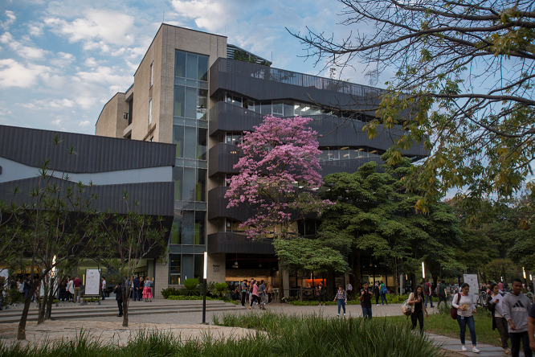

El Bloque 29 de la Universidad EAFIT en Medellín es un edificio multifuncional ubicado cerca de la Plazoleta del Estudiante y es un espacio clave para varias actividades académicas y administrativas.
El Bloque 29 de la Universidad EAFIT en Medellín es un edificio multifuncional ubicado cerca de la Plazoleta del Estudiante y es un espacio clave para varias actividades académicas y administrativas.
El Bloque 29 de la Universidad EAFIT en Medellín es un espacio dedicado a varias funciones administrativas
Construido para mejorar la experiencia de los estudiantes y del personal, el bloque alberga oficinas clave
como la Dirección de Desarrollo Humano-Bienestar Universitario, la Dirección Administrativa y Financiera,
la Oficina de Admisiones y Registro, y la Escuela de Verano. Además, este edificio cuenta con aulas para
cursos de Educación Continua, espacios de reunión, y servicios médicos y odontológicos para la comunidad
universitaria.
Esta dirección se encarga de promover el bienestar integral de la comunidad universitaria.
Ofrece programas y servicios de apoyo para el desarrollo personal, académico y social de los estudiantes,
como asesorías psicológicas, actividades culturales y deportivas, y programas de inclusión y diversidad
Gestiona los recursos financieros y administrativos de la universidad.
Sus funciones incluyen el manejo de presupuesto, tesorería, contabilidad,
y gestión de recursos para asegurar el buen funcionamiento de las operaciones de EAFIT
Esta oficina es responsable de todos los procesos de admisión y matrícula de los estudiantes.
También gestiona la inscripción de materias, la expedición de certificados y documentos académicos,
y la actualización de registros académicos de los estudiantes
Organiza cursos de verano tanto para estudiantes de EAFIT como para externos.
Ofrece cursos de actualización profesional, programas culturales y de idiomas,
y actividades académicas que aprovechan el receso de mitad de año para el aprendizaje
y el enriquecimiento personal
Ofrece programas de formación y actualización profesional para personas y empresas.
Incluye cursos, diplomados, y capacitaciones en distintas áreas del conocimiento,
dirigidos a mejorar las competencias de los participantes y fomentar el aprendizaje a lo largo de la vida
EProporcionan servicios de salud para atender necesidades médicas básicas
y odontológicas de los estudiantes, personal y profesores de la universidad.
Estos servicios incluyen consultas preventivas y de atención primaria,
fortaleciendo el bienestar integral de la comunidad
El bloque tambien cuenta con terrazas en el sexto piso con mobiliario
cómodo para que los estudiantes y colaboradores puedan estudiar o
relajarse al aire libre. Estas terrazas cuentan con mesas y sofás,
creando un entorno propicio para el trabajo en equipo o el descanso
de 7:00 am a 6:00 pm
de 9:00 am a 4:00 pm